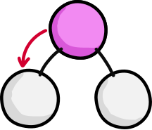
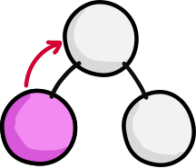
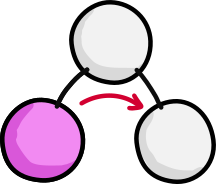

Handling Application State in react Apps
An introduction to redux
Thomas Kolar, Engineer @SilverTours GmbH
Overview
- Introduction
- Problem Statement
- Redux
- Live Coding Session
- Conclusion & Discussion
Application State
Business Data State
Basically this is all real world data that will be stored or processed
For a rental car price comparison service like billiger-mietwagen.de this would include data and information on e.g.:
- Cars
- Rental car stations
- Insurances
- Terms Of Hire
Communication State
Includes everything regarding requests to services, e.g:
- Expected data structure
- Timeouts
- Success / error messages
- Loading spinner / indicator
- Percentage of progress on down-/uploads
Control State
Refers to changes based on everything which the user has input into our app.
Control state is specific to a given container or component.
E.g.: A form which will change its appearance based on the users choice for the payment method
Session State
Covers all data related to the human being that interacts with our app like:
- User identifier
- Permissions
- Preferences
Keep in mind: Session state is most likely read-only in your app as it is usually server side controlled
Data Flow in React Apps
Parent to children
Props
Ref functions
Children to parent
Callback functions
Event Bubbling
Sibling communication
Communication via parent component
Any-to-any component communication
Global variables
Any-to-any component communication
Global variables THX BOROMIR!
Context
Observer pattern
“Don’t use Redux until you have problems with vanilla React.”
Problem statement
Redux
What is redux?
Redux is a predictable state container for JavaScript apps. It follows three basic principles:
#1 Single source of truth
The state of your whole application is stored in an object tree within a single store.
console.log(store.getState())
/* Prints
{
visibilityFilter: 'SHOW_ALL',
todos: [
{
text: 'Consider using Redux',
completed: true,
},
{
text: 'Keep all state in a single tree',
completed: false
}
]
}
*/
#2 State is read-only
The only way to change the state is to emit an action, an object describing what happened.
store.dispatch({
type: 'COMPLETE_TODO',
index: 1
})
store.dispatch({
type: 'SET_VISIBILITY_FILTER',
filter: 'SHOW_COMPLETED'
})
#3 Changes are made with pure functions
Impure
const Pi = 3.14159;
const calculateArea = (radius) {
for(let i = 0; i < radii.length; i++) {
radii[i] = radii[i] * radiii[i] * PI
}
return radii;
};
- This function only relies on global variables
- It does mutate passed arguments
Pure
const calculateAreasFromRadii = (radii, PI) {
let areas = [];
for(let i = 0; i < radii.length; i++) {
areas[i] = radii[i] * radii[i] * PI
}
return areas;
};
- This function only relies on passed arguments
- It does not mutate external state
- It does not mutate passed arguments
#3 Changes are made with pure functions
To specify how the state tree is transformed by actions, you write pure reducers.
function todos(state = [], action) {
switch (action.type) {
case 'ADD_TODO':
return [
...state,
{
text: action.text,
completed: false
}
]
default:
return state
}
}

Redux to the rescue!
Stop! Hammer time!
Live Coding Session